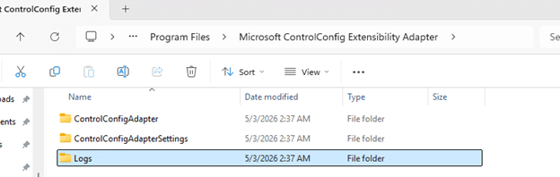
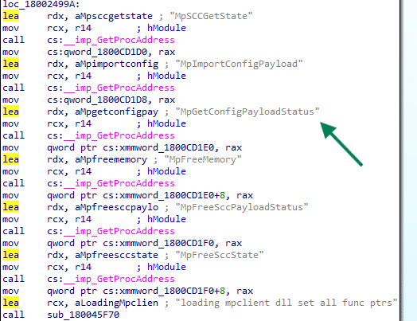
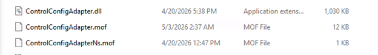
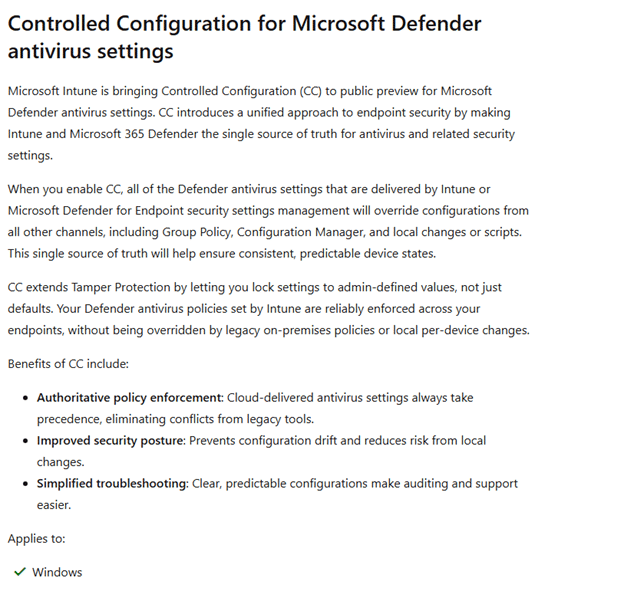
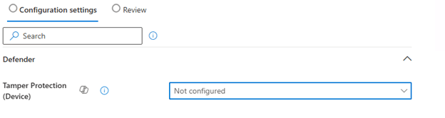

In this blog, we will look at something new coming: Controlled Configuration for Microsoft Defender antivirus settings. It sounds like another Defender setting at first, but the pieces already sitting on the device tell a much bigger story. Almost a year ago, I noticed the first traces of it, and now that Microsoft has finally mentioned Controlled Configuration publicly, it is time to connect those dots.
Please Note: This blog is based on OSINT and purely my own investigation….. nothing else… well… maybe the update of the what’s in development pages from MSFT
Introduction to Controlled Configuration
Almost a year ago (or even more), I stumbled upon something on one of my devices that immediately felt out of place. Buried in Program Files was a component called ControlConfigAdapter. I had never seen it before, Microsoft was not saying anything publicly about it, and the name was far too specific to ignore. So I started investigating….yes, investigating……


At first, it was just a folder, just a name, and that familiar feeling that Windows had quietly dropped something important on the device without much explanation (as always). What made it even stranger was where it showed up. This ControlConfig adapter came along in the same agent package as the device inventory agent MSI… That alone was enough to make me think about it, because device inventory and configuration enforcement are not exactly the same story. The more I investigated, the less this looked like a random device inventory extension and the more it looked like the plumbing for something much bigger… Something new for Defender.
Controlled Configuration does not belong to Device Inventory
The first surprise was simply that it existed. If you notice a new agent or component on the device and it appears next to an inventory agent, the natural assumption is that it likely belongs to the same device inventory agent. ControlConfigAdapter was sure not. While doing some additional investigation, the function names did not mention inventory, collection, or hardware state. They were talking about config payloads, policy status, payload import, and something called SCC state.

That already pushed it in a very different direction. Instead of looking like an additional part of the device inventory agent, it started to look like something that receives policy, hands it off, and tracks the result. That was the moment I started to believe it had something to do with Defender.
Controlled Configuration payload import and policy state
Once I started following the functions, the story became clearer. The controlled configuration adapter has routines that line up around three big actions. First, it can import a configuration payload. One of the clearest examples is the function that logs, which calls MpImportConfigPayload.

That alone is a strong hint that this adapter is not enforcing settings on its own. It looks more like a bridge that takes an incoming management payload and hands it to the Defender configuration layer through mpclient.dll.

Second, it can retrieve payload status. Another function calls MpGetConfigPayloadStatus, then reads the response and logs whether the payload was successfully retrieved. That tells you this is not a one-way push only. It also wants feedback from the Defender side.


Third, it keeps checking something called SCC state (secure controlled configuration?. Multiple functions revolve around reading that state, logging it, parsing versioned data, and turning it into policy reporting. So, there is an import path, a status path, and a state path.
That combination matters. It means this adapter looks like a management bridge with full round-trip behavior. It takes the Secure Controlled configuration in, asks Defender to apply it, reads back the status, and exposes reporting on top of that.
The MOF file tied it into Microsoft device management
While looking through the Controlled Configuration adapter folder… something else caught my eye. Inside the folder, there was a MOF file. That MOF file was the missing piece.


Instead of sitting in some private Defender-only corner, the provider is registered in the ROOT\MicrosoftDeviceManagement_Extensibility_ControlConfig namespace. The class is literally called ControlConfigAdapter and it inherits from OMI_BaseResource, which is exactly what we also noticed with the device inventory agent and how that one was connected to declared configuration.

The keys are also revealing. The class defines DocumentID, Version, MeID, PayloadName, SettingReportIDs, ReportNodeName, BaseReportNodeName, and ExtendedProperties. The actual payload is carried in ControlConfigPayload and the resource supports GetTargetResource, TestTargetResource, and SetTargetResource.

It tells you this adapter is designed to receive a declarative device configuration document, identify it properly, apply it, test it, and report back…. Get … Set … test … That is where the adapter stopped looking like a local Defender helper and started looking like a native Defender enforcement bridge connected to MMP-C and WinDC
SCC kept showing up in the MPClient
Then there was the other breadcrumb that kept repeating itself as I investigated: SCC. It showed up everywhere. It showed up in the configuration tree under Features\SCC and Features\SCC\Notification.

The MPClient also contains trace strings such as Origin_SCC, Origin_SCC_Policy,, TamperProtection, and even a string named SecureControledConfig with the typo included.

So while Microsoft was not publicly explaining what SCC meant at the time, the Defender Client was already showing it. Whatever SCC is, it was being treated as a distinct policy source inside the Defender Agent. In other words, the function is not only concerned with whether a value exists. It is concerned with who owns the value, which source wins (sounds like tamper protection), and whether local administrators are still allowed to merge or override settings.That starts to sound a lot stronger than classic tamper protection.
Controlled Configuration In Defender
One of the more interesting parts is that the Defender provider already seems to know about this state. Inside the ProtectionManagement MOF, the MSFT_MpComputerStatus class exposes a field called ControlledConfigurationState.

Which is also visible if you ask for the defender status

That stood out immediately. It sits there next to other known Defender states, including IsTamperProtected and TamperProtectionSource. That means the Defender side is already prepared to expose a dedicated controlled configuration state. Not just tamper protection, but something better. That is a strong clue. It suggests that tamper protection and controlled configuration are not the same thing. They live next to each other in the Defender model.
Controlled Configuration showing up in the What’s in Development
For a long time, all of that lived only in the code, on the device, and in the adapter itself. That made it interesting, but still incomplete. You could see the plumbing, but there was no public sign yet that connected it to an actual product direction. That finally changed once Controlled Configuration appeared on Microsoft’s What’s in development page.


That matters more than it might seem. Because once Microsoft announced this Controlled Configuration for Microsoft Defender, the adapter suddenly stopped looking like an unfinished internal experiment and started looking exactly like what it had been hinting at all along. Tamper Protection v2 :)..… and it all started with the ControlConfig Adapter showing up on my devices last year!
Controlled Configuration For Defender in Intune
I need to be a bit careful here, because this part is still more about where the signs are pointing than about a fully public experience everyone can click through today… so the next few sentences… is all based on what I think it will look like (AKA not present of today).
But based on the current Intune Portal configuration and the way this feature is described, Controlled Configuration seems like a setting that would naturally sit in the same general area as the Tamper Protection setting in the Defender Configuration.


In other words, this feels like something that would belong alongside the Defender antivirus and endpoint security experience… So when I need to make a wild guess, it will look something like this…

The Windows Security side also fits that direction. If the device is going to expose a Controlled Configuration State, then there is clearly already a local status concept for this feature. That means the experience is not only about sending policy down. It is also about showing whether the device is actually under that stronger configuration model.
Please note: The picture above and below are MOCKUPS!!!!!

So while I would not present any portal layout as final, I would absolutely say this: if Microsoft rolls out Controlled Configuration, I would expect it to show up exactly where admins already manage Defender security posture, only with a much heavier focus on source of truth and enforcement.
Controlled Configuration beats Defender Tamper protection
Tamper protection is already useful, but it is also narrower. Tamper protection protects a defined set of Defender settings from being disabled or changed. It is very good at saying no, especially when something local tries to turn off protection or weaken it.
Controlled Configuration for defender looks way stronger and better. Everything about this adapter suggests it is not just there to block changes. It looks like it is there to make management authoritative. The document comes in through a management resource model. The payload gets handed to the Defender side. The adapter checks the status. SCC state is tracked. Strict policy mode and local admin merge behavior are part of the story. The Defender provider exposes a dedicated controlled configuration state. That is a very different posture.
Tamper protection says certain protected settings cannot be changed.
Controlled configuration appears to say Intune owns the configuration, Defender applies it, and the device reports that managed state back. And the most interesting part is what happens to everything you did not explicitly configure.
The wording Microsoft is using around this feature strongly suggests it is not only about locking configured settings. It is also about falling back to secure defaults for the rest. That is what makes this feel like more than a simple rename of tamper protection v2. It looks more like a larger managed enforcement model that may include tamper protection.
Closing thoughts
When I first noticed ControlConfigAdapter on my device almost a year ago, it looked like one of those strange new components Windows sometimes drops on a machine long before anyone is ready to explain it. At that point all I had was a name, a folder, and a lot of unanswered questions. Now the picture is very different.
The code shows payload import, status retrieval, and SCC state handling. The MOF ties it into Microsoft device management extensibility with the kind of metadata you would expect from MMP C and WinDC. The Defender provider already exposes a ControlledConfigurationState. The configuration manager knows about SCC as a policy origin. And Microsoft has finally published Controlled Configuration in the “What’s in development” pages. This does not look like a small cosmetic addition to tamper protection.
It looks like Microsoft is building a stronger model where Defender configuration is not only protected from tampering, but managed, enforced, and reported as a secure controlled state.